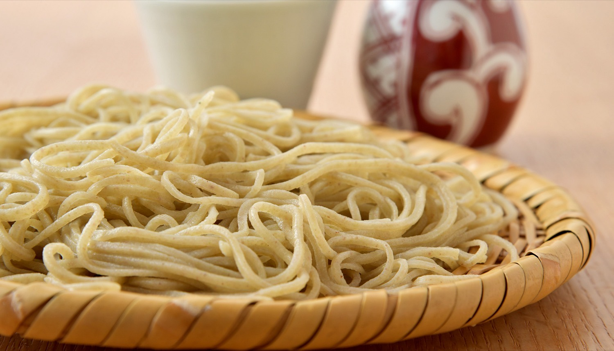
F U T A T S U N O K O N A
当店では、そば粉だけで打つ生粉打ちと、つなぎを二割あわせた外二の、二通りをご用意しております。 どちらも茨城の契約農家の在来種を玄蕎麦で仕入れ、石抜き、磨き、選別、皮むきまで店主が行い、石臼で自家製粉した粉でございます。 その日の朝に手で打ったものを、順にお出ししております。
其の一
きこうち／十割
そば粉 十／つなぎ なし
生粉打ちせいろ 1,100円
そば粉だけで打ちます。香りが立ち、口に入れたときのそのものの味をいちばんはっきりとお感じいただけます。細打ちですので、喉ごしも軽うございます。
其の二
そとに／つなぎ二割
そば粉 十／つなぎ 二
せいろそば 900円
そば十に対して、つなぎを二割あわせます。しなやかで切れにくく、そばを召し上がり慣れていない方や、お子様とご一緒のときにも召し上がっていただきやすい一枚です。
お値段の差は二百円でございます。お迷いでしたら、お席で店の者にお声がけくださいませ。その日の粉の具合からお勧めいたします。
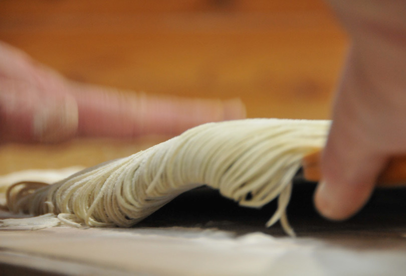
O M A K A S E
夜は、前日までのご予約をいただいた方に、おまかせのコース料理をお出ししております。 出汁を味わっていただきながら、そばの醍醐味とともに、その季節のものをご堪能いただけるようご用意いたします。 お集まりやご会食にもご利用くださいませ。
6,600円 から
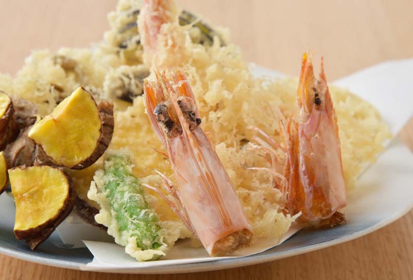
S O B A U C H I
玄蕎麦のまま仕入れ、石抜き、磨き、選別、皮むきまで、すべて店主が行っております。 粉にしてから打ち上げるまで、店の外へは出しません。石臼は発熱を抑えるために低回転で挽いております。
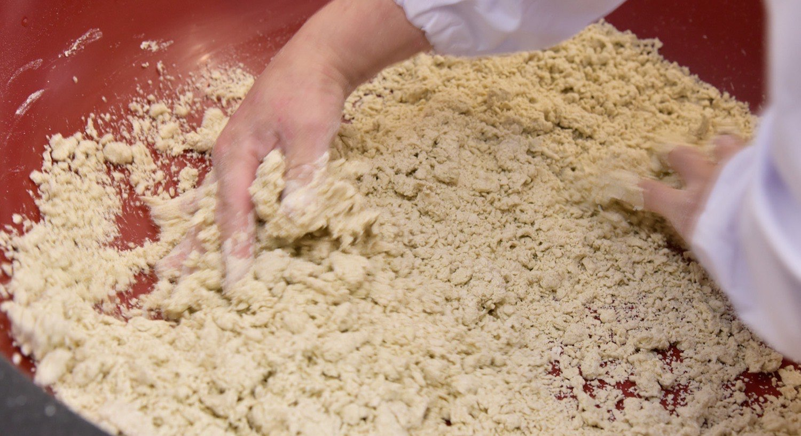
其の一
粉の状態や、その日の温度・湿度によって、加える水を細かく加減いたします。いちばん大切な工程でございます。
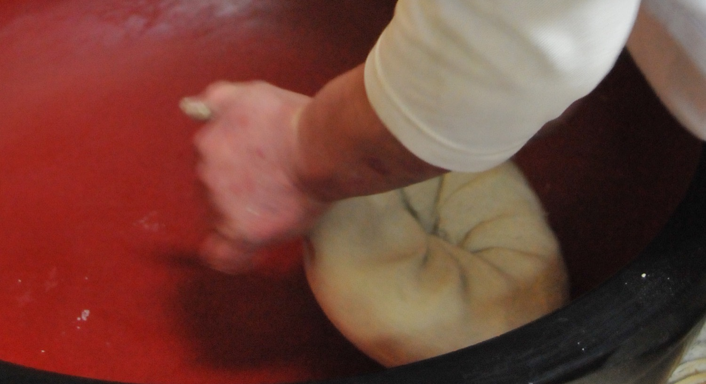
其の二
回転させながら、空気を抜くように中心へ練り込んでまいります。菊の模様のような形になります。
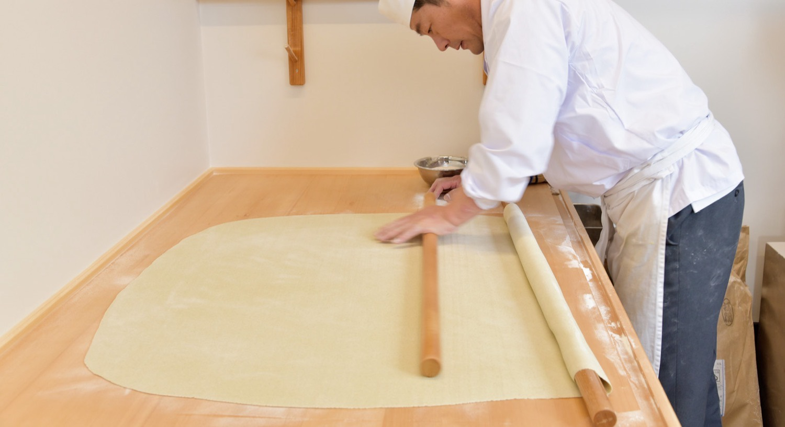
其の三
麺棒で生地を伸ばしてまいります。端まで同じ厚さにそろえます。
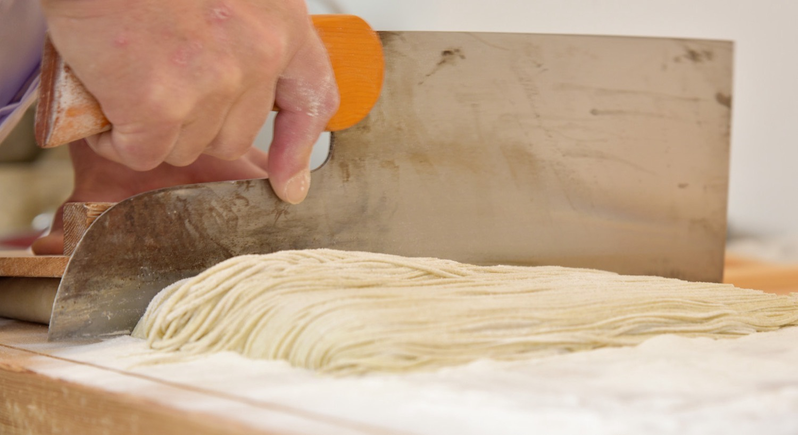
其の四
細く、同じ太さに切りそろえます。細打ちにいたしますのは、そばの香りをより立たせるためでございます。
S O Z A I
主に茨城県内の契約農家による選抜栽培の在来種を使っております。有機肥料などで土壌から見直し、丹精込めて育てていただいたものでございます。玄蕎麦で仕入れ、当店で挽いております。
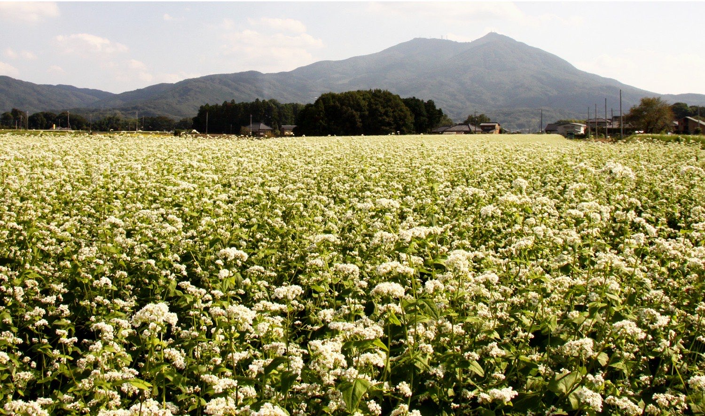
鹿児島県の枕崎または指宿など、近海物の本枯れ節をさらに吟味したものを使っております。熟成させたかえしと合わせました。汁のうまみを味わっていただくのも、そばの楽しみのひとつと存じます。
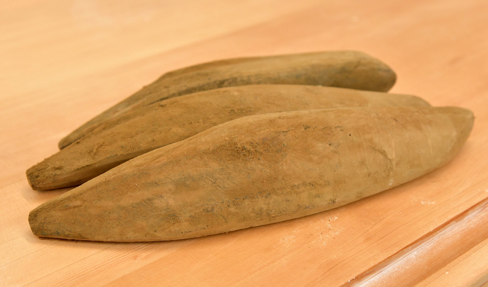
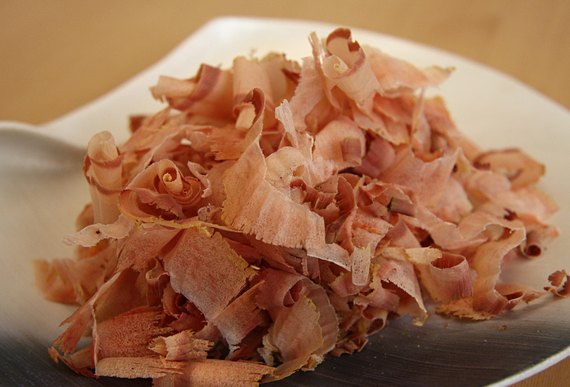
車海老のなかでも才巻海老と呼ばれるものを、店の水槽に生かしております。ご注文をいただいてから調理いたしますので、揚げたてをお出しできます。季節によっては天然物も入荷いたします。穴子や桜海老も天ぷらでご賞味いただけます。野菜は地元産にかぎらず、新鮮なもの、旬のものを選んでおります。
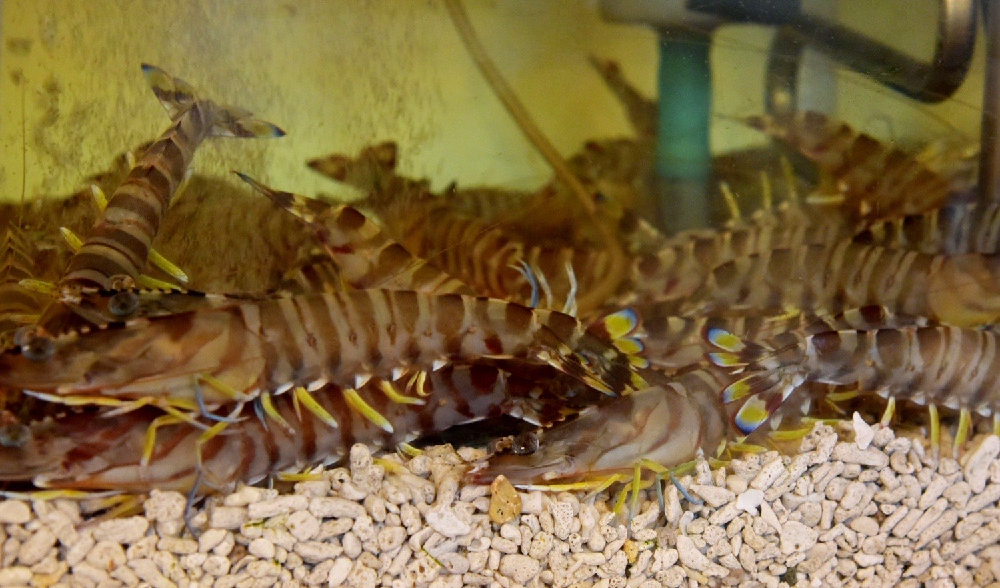
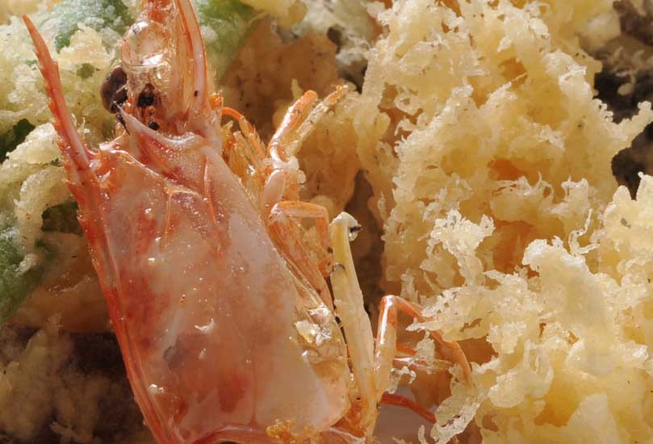
S H I T S U R A I
白い壁と木の天井の、明るい店内でございます。カウンター席、テーブル席、ソファー席をご用意しております。 全席禁煙とさせていただいております。2020年6月末に、この場所へ移らせていただきました。
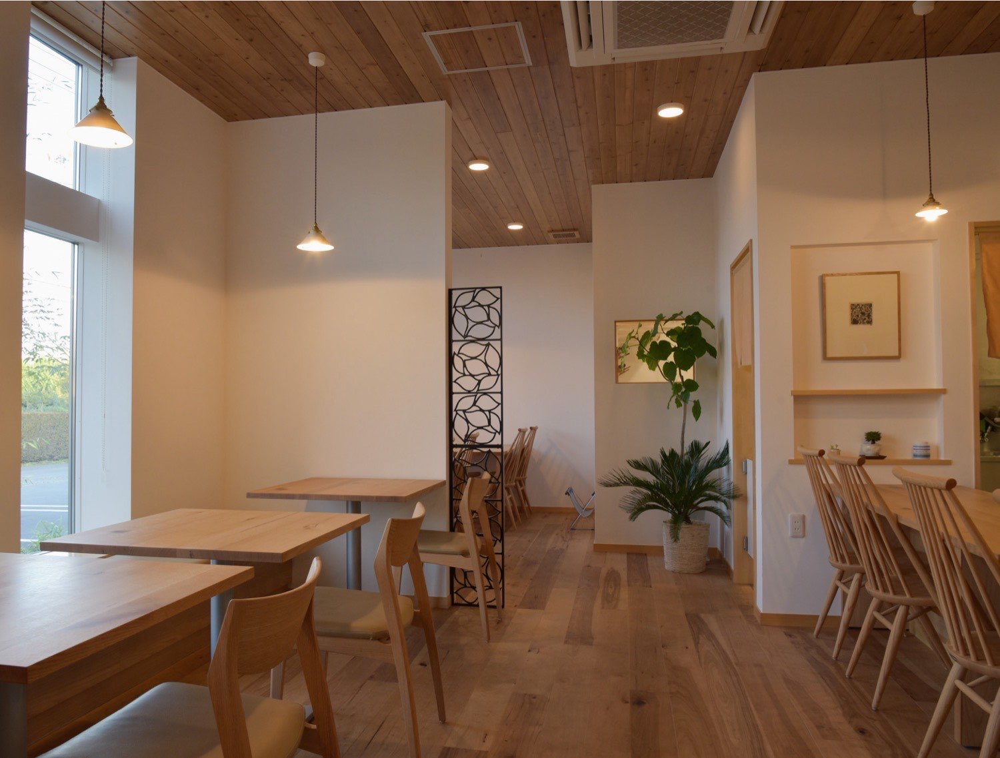
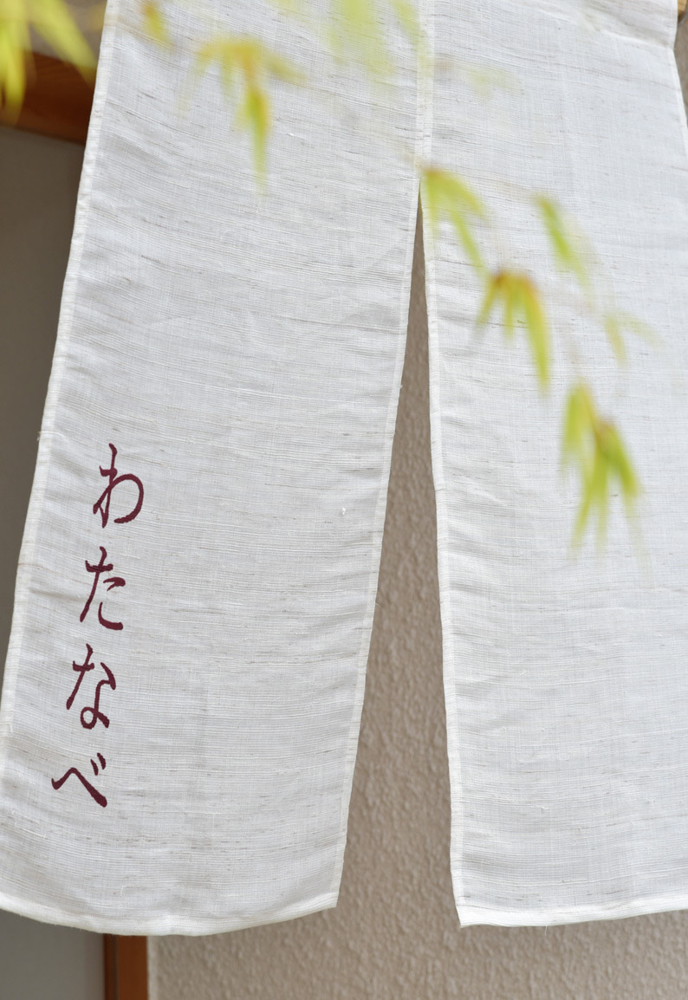
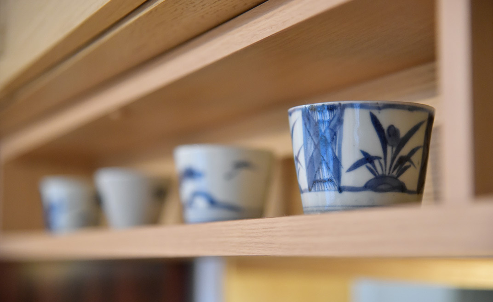
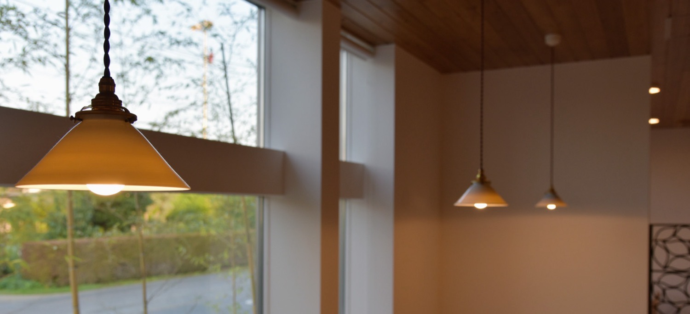
A C C E S S
| 住所 | 〒329-0101 栃木県下都賀郡野木町友沼4794-11 |
|---|---|
| 電話 | 0280-57-1825 |
| お昼 | 11:00〜16:00火曜日は11:00〜14:30／売り切れ仕舞いの場合はご容赦くださいませ |
| 夜 | 17:00〜（閉店22:00）前日までにご予約をいただいた、おまかせのコースのみ承ります |
| 定休日 | 水曜日 |
| お席 | カウンター席・テーブル席・ソファー席全席禁煙。お昼のご予約は承っておりません |
| 駐車場 | 10台 |
| お支払い | 現金／クレジットカード／電子マネー |